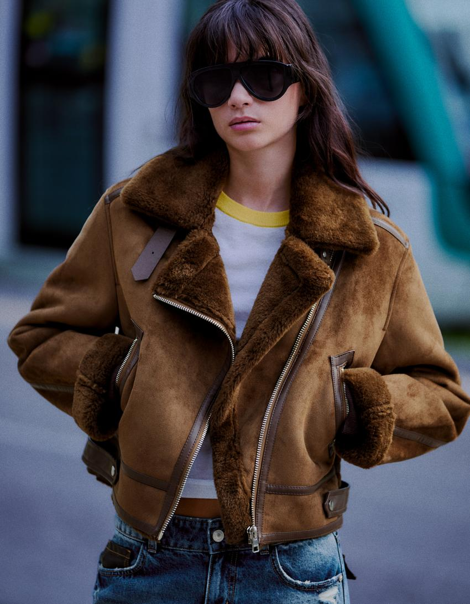

Les tendances
tendance automne hiver 2026
L'aubergine et le rouge tomate sont partout cette saison, et la mandarine vient réveiller les tenues plus sobres. Le velours et la maille reviennent en force, le cuir ne bouge pas.
Édition automne 2026

Les pulls ressortent des placards et les bottines reviennent. On fait le point sur ce qui se porte cette saison, avec des idées de tenue automne femme faciles à reprendre au quotidien.
tendance automne hiver 2026
L'aubergine et le rouge tomate sont partout cette saison, et la mandarine vient réveiller les tenues plus sobres. Le velours et la maille reviennent en force, le cuir ne bouge pas.
chaussures, sacs, vestes
Avec une bonne paire de bottines et une veste en cuir, la moitié de vos tenues d'automne est déjà faite. Les bottines vont avec un jean comme avec une robe, et la veste en cuir se met par-dessus un pull ou une chemise quand il fait frais. Ajoutez un sac à main assez neutre pour aller avec tout : un beige ou un marron suffit. Si vous voulez de la couleur, mettez-la sur une seule pièce, par exemple le sac, et gardez le reste sobre.
tenue automne femme
Au bureau, un pull en maille sous un tailleur marche très bien. Le week-end, on garde son jean, et le soir on sort le velours.
mariage, baptême
Pour un mariage ou un baptême en automne, une robe en dentelle dans une couleur foncée fait toujours son effet. Le bordeaux, l'aubergine ou le vert foncé vont bien à cette saison, et la dentelle rend la robe habillée sans qu'on ait besoin d'en rajouter. Pas besoin d'en faire trop avec les accessoires : un petit sac et des bijoux discrets suffisent. Pour la cérémonie, pensez à prendre un gilet ou un manteau, parce que les églises sont souvent fraîches en cette saison. Et pour marcher toute la journée, choisissez des chaussures confortables.